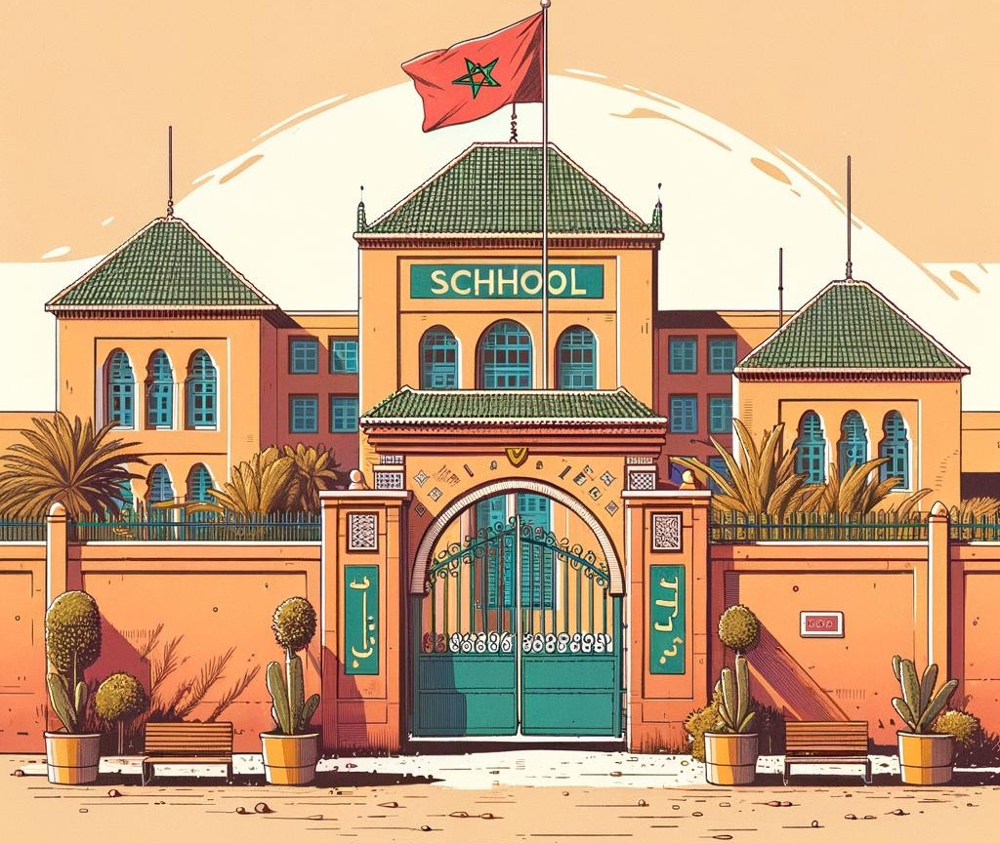
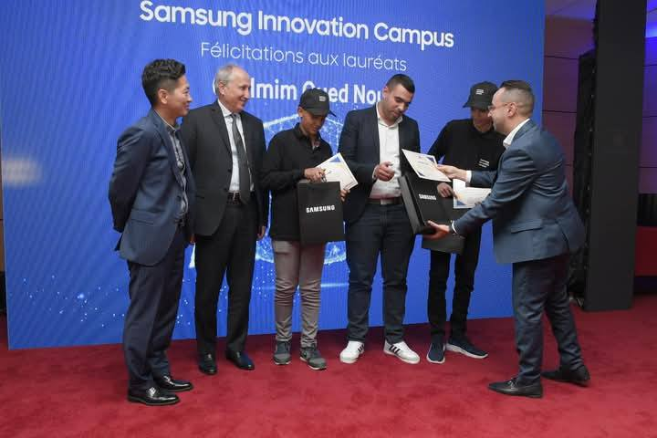
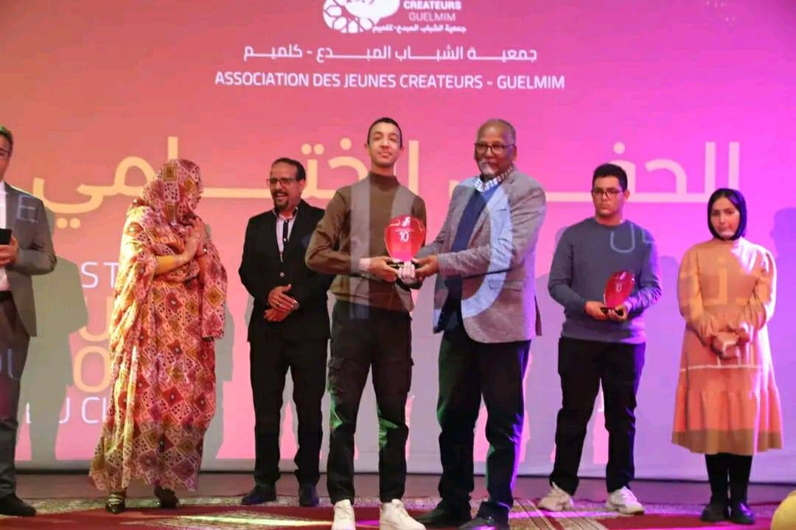
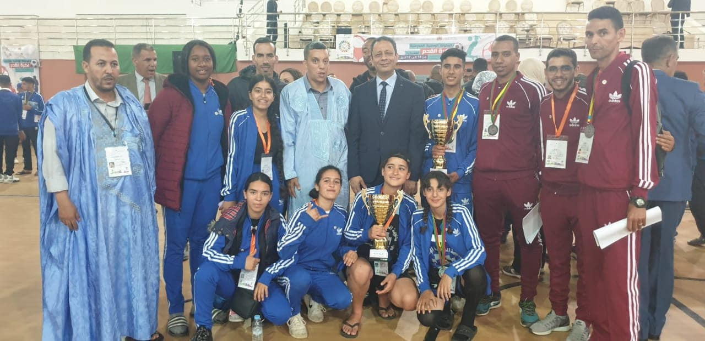

Fondé au cœur de la ville de Guelmim, le Lycée Qualifiant Mohammed V est l’un des établissements scolaires les plus emblématiques de la région. Créé dans les années 2010, il a depuis joué un rôle central dans la formation de générations d’élèves, contribuant activement à l’essor éducatif et culturel de la province. Alliant excellence académique, encadrement pédagogique rigoureux et vie scolaire dynamique, le lycée propose un large éventail d’activités parascolaires : clubs scientifiques, culturels, artistiques, ainsi que des compétitions sportives et des actions citoyennes. À travers ses projets innovants et son engagement dans l’éducation de qualité, le Lycée Mohammed V s’impose comme un pôle d’apprentissage et de rayonnement dans tout le sud du Maroc.


Dans le domaine du numérique, le lycée Mohammed V Guelmim s'est classé troisième au niveau national au concours national de programmation Python.

Dans le domaine artistique, le lycée Mohammed V de Guelmim a remporté le Prix du Jury du Meilleur Reportage Journalistique.

Sur le plan sportif, le lycée Mohammed V de Guelmim s'est classé deuxième au niveau national après un match épique à tous points de vue.